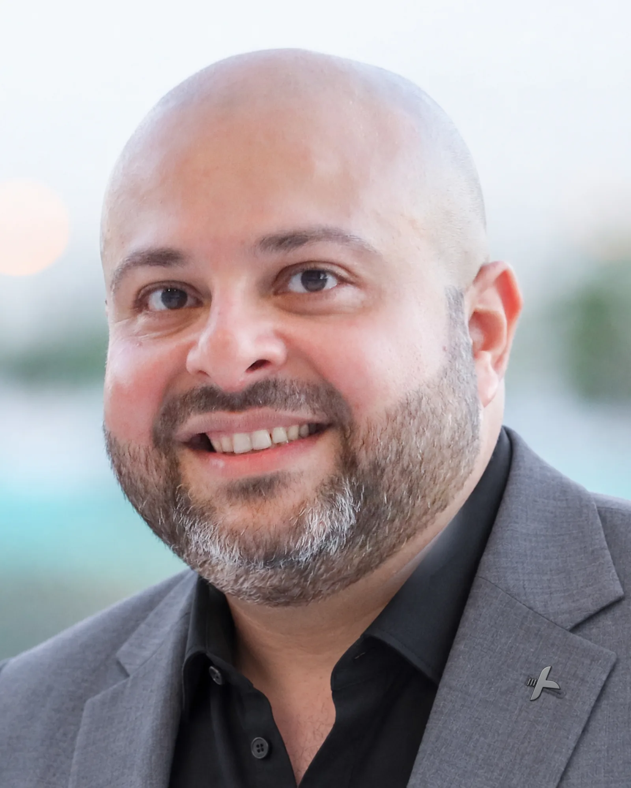
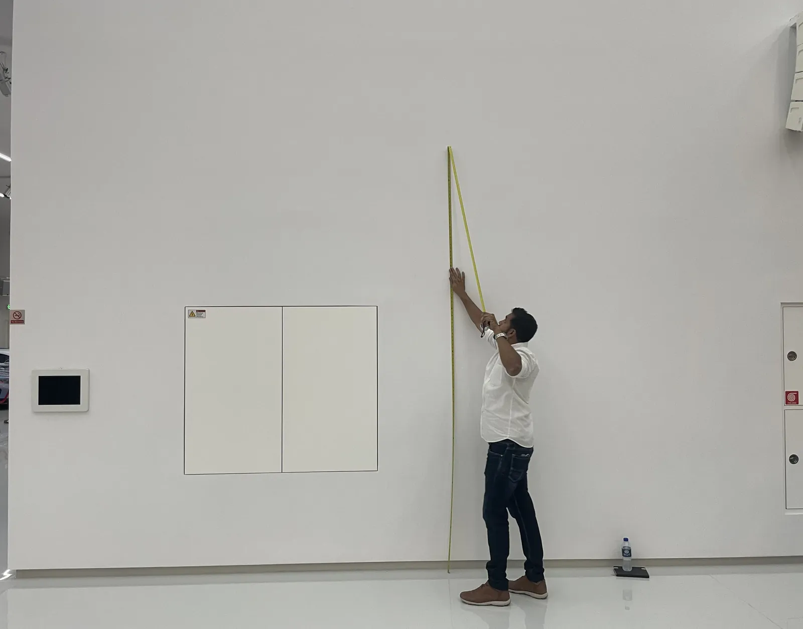
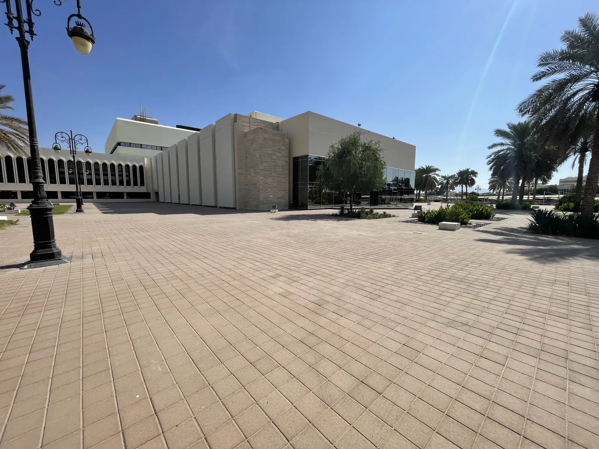
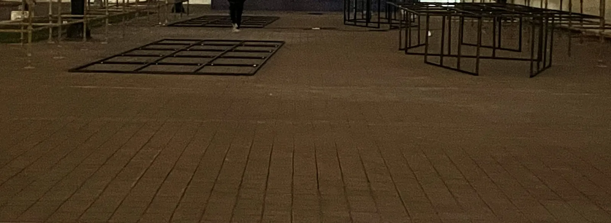
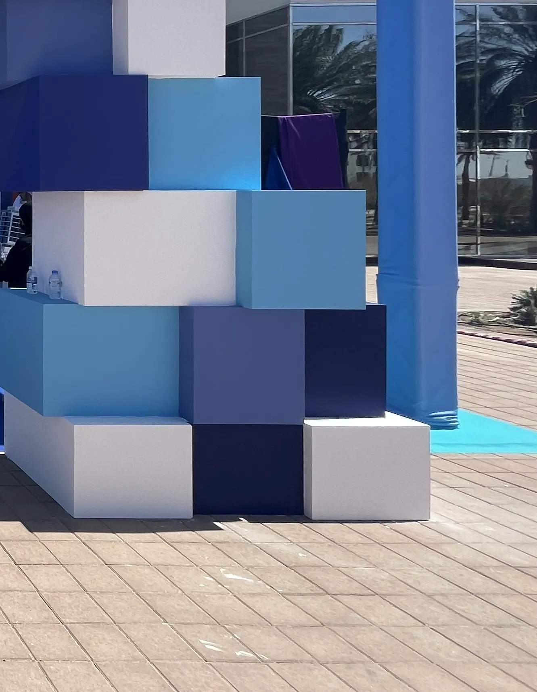
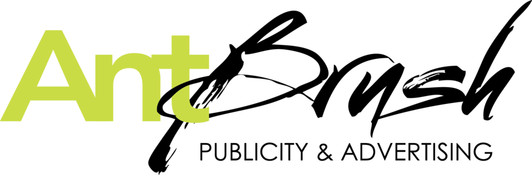
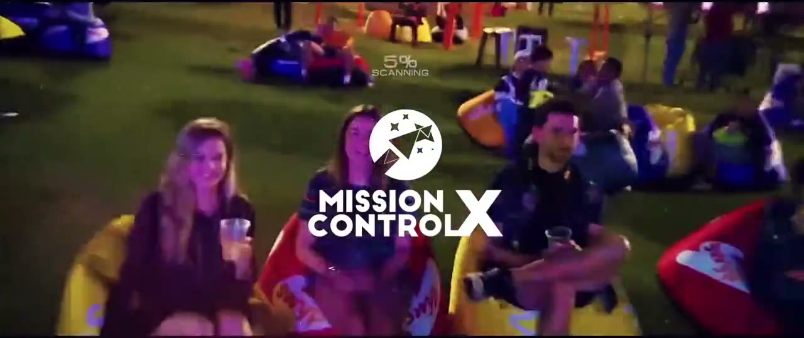

About
Hello, I’m
Tony.
Executive Creative Director.
From Cairo to Dubai and Abu Dhabi, now in Tampa.
I lead ideas from the first drawing to the real thing.
I led identities, national campaigns, launches, pavilions, festivals and concerts.
Today I work as one creative director with AI as the studio.
Read moreClose

I’m Antoni Gerges, Executive Creative Director. Tony, once we’ve met. I lead ideas from the first drawing to the real thing.
I trained in graphic design at the Faculty of Fine Arts in Minia, Egypt, and started designing for a living in Cairo in 2003. In 2006 I moved to Dubai. A year later I founded AntBrush, my agency, in Abu Dhabi, and led it until 2024.
I led identities, national campaigns, launches, pavilions, festivals and concerts: for government bodies in Dubai and Abu Dhabi, for brands such as ZEISS and Etisalat, and, with my partners at Mission Control X, for live shows from Amr Diab to Lilly Singh.
What I lead is the whole way of an idea. First what it should mean, then the mark, the look and the words, then the film, the room, the gate or the stage. Then the build, with the crews and the fabricators, until the doors open.
I still care most about two moments: the first drawing, and the minute the real thing is standing where the drawing said it would.
Since December 2024 I live in Tampa, Florida. This site, its films and its animation are my own work with today’s tools.
Today I work as one creative director with AI as the studio: I lead the idea and the build, and run the production with the tools below. The system behind it has four parts: Creative, Connect, Code, CRM.
- Title
- Executive Creative Director
- Agency
- Founder, AntBrush, 2007 to 2024
- Cities
- Dubai · Abu Dhabi · Cairo · Tampa
- Trained
- Faculty of Fine Arts, Minia University, Egypt
- Works in
- English and Arabic
- Tools
- Claude, ChatGPT and Codex, Gemini, Google Flow, Midjourney · Illustrator, Photoshop, InDesign · Google Workspace, GoHighLevel
- Now
- Tampa, Florida, since December 2024. One creative director with AI tools; this site is the first proof.
- My system, four Cs
- Creative · Connect · Code · CRM. Most businesses run these in four places. I run them as one system.
How I work
The idea is still the job.
Find the one idea.
Every brief hides one idea.Read moreCloseI look until I find it. Then everything else is built from it. One picture, not ten.
Dubai Health Authority · Identity · 2008. The mark in five steps, as we set it out in the brand manual. The name completes the open corner. ZEISS Vision Care · Launch · Dubai · 2022 · with Mission Control X. A lens, the ZEISS brackets and an eye: one picture. The launch grew from this sheet. Draw many. Choose one.
I choose the one that holds.Read moreCloseI draw more than one route. I put them side by side. Then I can tell you why.
Dubai Health Authority · Identity · 2008. Six of the twelve routes we drew, and the one they chose. Four presentations in three weeks. Almost a thousand of its staff voted. The Big Grill · Festival poster · Abu Dhabi · 2018 · with Mission Control X. The first route, then a second, cut harder, on a slant. Then one last question: red, or ochre. Stay until it stands.
I’m there when the doors open.Read moreCloseI stay close to the work. I check the plan against the room. I work with the team as it takes shape.

01 Measured · 17 June 02 Drawn · 25 June
02 Drawn · 25 June 03 Built · 27 June
03 Built · 27 June
ZEISS Vision Care · The Space, Dubai · 2022 · with Mission Control X. One wall: measured, drawn, built. 
01 Empty · 19 Dec
02 Steel · 18 Feb
03 Open · 21 Feb
Innovation Month · Al Ain · 2024. The forecourt in December. The steel three nights before. The gate the morning it opened. Then it is built. The fourth beat is the work itself.


The agency

AntBrush,
2007 to 2024.
The independent creative agency I founded in Abu Dhabi.

Play the film2:14Mission Control X, Dubai, 2017 to 2022: Co-Managing and Creative Director. The agency’s promo film.
Read moreClose
I founded AntBrush in Abu Dhabi in 2007 and led it for seventeen years, with Dubai and Cairo following. An independent creative agency for government bodies, global brands and artists: I directed the creative team and the production partners from the pitch to the delivery.
From 2017 to 2022 I was also Co-Managing and Creative Director of Mission Control X in Dubai, producing live shows for Amr Diab, Angham, Mohamed Mounir, Magida El Roumi and Lilly Singh, and festivals and launches for Etisalat, Unilever, ZEISS and Publicis.
- Combined project value
- US$10M+ through AntBrush and Mission Control X
- Pitches won
- Dubai Health Authority, eight agencies in the room · Abu Dhabi Building Codes, over a weekend · Liwa International Festival, a US$1.04M contract
- Built from scratch
- Six festival zones in the desert · a 7,200 sq ft pavilion in three days · a launch live six days after confirmation
Where and for whom
From Cairo, to the Gulf, to Tampa.
- 2003CairoGraphic designer
- 2006DubaiJunior art director
- 2007AntBrushFounded in Abu Dhabi; Dubai and Cairo followed
- 2017Mission Control XLive shows, festivals and launches, Dubai
- 2024Tampa, FloridaOne creative director, with AI as the studio
Read moreClose
- DubaiDubai Health Authority, ZEISS, Why Not! Mazzika, the concerts, Capacity Middle East
- Abu DhabiCityscape, Al Forsan, The Big Grill
- Al AinInnovation Month
- Al DhafraLiwa International Festival
- Across the UAENational Bullying Prevention Week
- GizaMajid Al Futtaim Global Solutions
- From Dubai, to schools worldwideAIAASC
- Clients
- Dubai Health Authority
- Department of Municipal Affairs and Transport, Abu Dhabi
- UAE Ministry of Education
- Al Ain City Municipality
- Abu Dhabi Sports Council
- ZEISS
- Etisalat
- Unilever
- Publicis
- Majid Al Futtaim
- Venues
- Coca-Cola Arena, Dubai
- Marriott Mena House, Giza
- ADNEC, Abu Dhabi